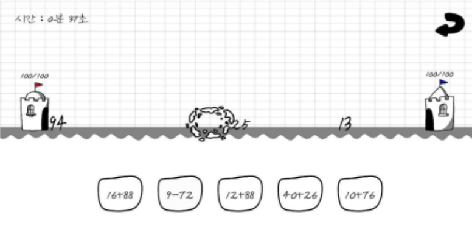
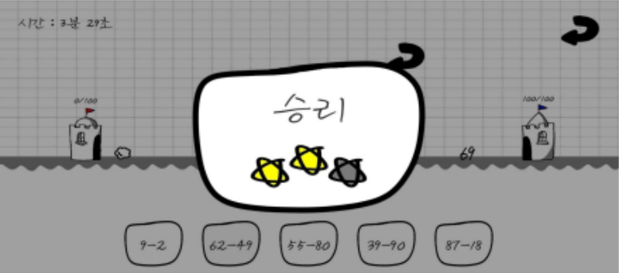

기간: 2022.05 ~ 2022.07
개발 엔진: Unity
장르: 디펜스
플랫폼: Android, Windows
인원: 1명
개요: 수학을 조금 더 재밌게 배우기 위한 디펜스 형식 게임


기간: 2022.05 ~ 2022.07
개발 엔진: Unity
장르: 디펜스
플랫폼: Android, Windows
인원: 1명
개요: 수학을 조금 더 재밌게 배우기 위한 디펜스 형식 게임

화면을 전환 하거나 게임의 승패를 알기 위해 새로운 인스턴스를 만드는 건 비효율적이라 생각해 싱글톤 패턴을 사용하게 되었습니다.
적이 나오면 적 숫자에 맞는 연산자가 하단 버튼에 나오도록 Queue를 활용해 버튼이 나오는 방식을 구현하게 되었습니다.
스테이지를 할 때마다 똑같은 수가 똑같은 패턴으로 나오게 되면 계속 플레이 할 경우 재미가 없어질 것이라고 판단해 랜덤 함수를 활용해 적의 숫자와 연산자를 변경 해 같은 스테이지를 여러번 하더라도 매번 다른 경험을 할 수 있게 하였습니다.
적 숫자와 플레이어 숫자의 차이가 너무 많이 나는 문제가 발생하여 게임 플레이에 영향을 주었습니다.
게임을 껏다 켰을 때 클리어한 스테이지가 저장되지 않아 다음 처음부터 다시 클리어 해야하는 문제가 발생했습니다.
텍스트 파일에 적 숫자와 비슷한 값이 나오는 연산들을 미리 만들어 적 숫자와의 차이를 줄일 수 있었고 이를 통해 텍스트 파일을 읽고, 쓰는 방법을 배울 수 있었습니다. 또한 텍스트 파일을 만드는 프로그램을 작성해 빠르게 데이터를 만들 수 있었습니다.
데이터를 저장하는 방법을 알아보며 SQL, Json, PlayerPrefs 등 다양한 데이테 관리 방법에 대해 알 수 있었고 그 중 게임에 가장 적합하다고 생각하는 PlyerPrefs를 사용해 데이터를 저장, 관리 해 문제를 해결하였습니다.

